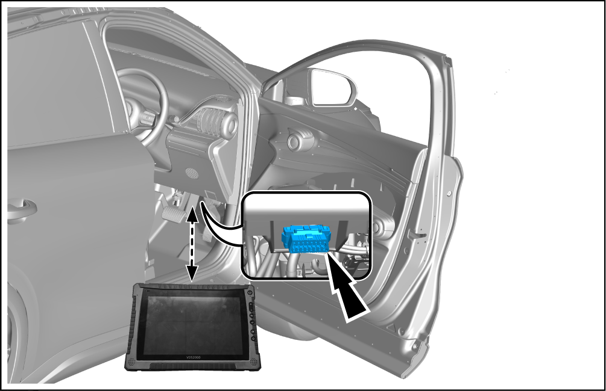

Calibration of VTOL Discharge Function
Calibration Procedure

-
After replacing the repair kit of the drive motor control module assembly, calibrate the VTOL discharge function with VDS.
-
Before executing the calibration, please check and confirm VDS software has been updated to the latest version.
-
Use a VDS to connect the vehicle OBD interface. See the VDS Instructions
CautionOBD interface is located at right lower corner of right lower guard plate of instrument panel. -
When the charger is not inserted, set the vehicle power supply to OK, enter the "Vehicle Diagnosis System", and select the vehicle model.
-
After scanning the vehicle module, enter the "On-Board Charger" for diagnosis interface.
-
In the diagnosis interface, select "Calibration".
-
Select "VTOL Discharge".
-
According to the configuration table, check whether there is a VTOL discharge option. If there is no VTOL function, no VTOL shall be indicated.
-
Tap the discharge frequency and voltage, and select the corresponding discharge voltage and frequency based on the local grid.
-
Once the calibration is successful, read the calibration results on the right interface.